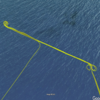
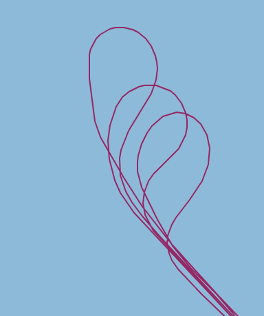

flight-phase-separation¶
The idea behind floght phase separation is to be able to select segments of flights according to their properties. The selection can be done by attributes like names and further on levels and is applied to the platform and instrument data by using start and end datetime objects belonging to the segment.
flight segments¶
Keyword: kinds¶
This table provides an overview of the keywords used to describe the flight segments. Multiple keywords can be used for one flight segment.
ascends and descends¶
kinds |
description |
id ending |
|---|---|---|
major_ascend |
takeoff from the airport until a constant flight level is reached |
_ma |
major_descend |
last descend from a constant flight level befor landing at the airport |
_md |
small_ascend |
ascend of less than 1 km height difference between start and end times |
_sa01 |
small_descend |
descend of less than 1 km height difference between start and end times |
_sd01 |
large_ascend |
ascend of more than 1 km height difference between start and end times |
_la01 |
large_descend |
descend of more than 1 km height difference between start and end times |
_ld01 |
profiling |
ascend or descend with vertical speed mostly between 5-10 m/s |
flight altitude¶
kinds |
description |
id ending |
|---|---|---|
low_level |
constant flight level at < 1 km altitude |
_ll01 |
mid_level |
constant flight level at 1-2 km altitude |
_ml01 |
high_level |
constant flight level at > 2 km altitude |
_hl01 |
overflights, underflights, and co-location¶
kinds |
description |
|---|---|
nya_overflight |
Overflight over the Ny-Alesund research station. Might be combined or together with cross_pattern or high_level. |
ps_overflight |
Overflight over the Ny-Alesund research station. Might be combined or together with cross_pattern. |
a-train_underflight |
Underflight of the A-Train satellite constellation. For Polar 5, it is usually combined with high_level. For Polar 6 it might be any profiling pattern. |
[p5 |
6]_co-location |
pattern¶
Pattern usually consist of parts like legs and turns named accordingly.
kinds |
id ending |
|
|---|---|---|
cross_pattern |
rectangular crosses with transfer legs in between. Usually flown over Ny-Alesund or Polarstern. |
_cp01 |
racetrack_pattern |
Back and forth on the same track, with possible height changes |
_rt01 |
holding_pattern |
Spending time with waiting. |
_ho01 |
stairstep_pattern |
Stepwise up or down along a straight line. |
_ss01 |
sawtooth_pattern |
Continious climbing follow by descending or the other way round. |
_st01 |
waiting_pattern |
Anything to waist time or new alignment |
Race track: 
turn¶
kinds |
|
|---|---|
short_turn |
Turn directly to next straight leg - cutting corners. |
long_turn |
Turn on the long way to the next direction without cutting the corner. |
procedure_turn |
Perform 180 deg turn to be directly on track again in opposite direction. |
Short turn: Procedure turn: 
This table is just a template!
description of the flight yaml files¶
name: RF04 # number of research flight within campaign
mission: ACLOUD # name of campaign [ACLOUD|AFLUX|MOSAiC-ACA]
platform: P5 # platform short name [P5|P6|HALO]
flight_id: ACLOUD_P5_RF04 # campaign_platform_name
contacts:
- name: Name of PI # PI o flight
email: email_address
- name: null # creator of yaml
email: null
date: 2017-05-23 # date of flight (take off day)
flight_report: null # url of public flight report
takeoff: 2017-05-23 09:11:47 # datetime object of take off
landing: 2017-05-23 14:23:40 # datetime object of landing
events: []
remarks:
- Clouds above open water and sea ice
segments:
- kinds:
- major_ascend
name: major ascend 1
irregularities: []
segment_id: ACLOUD_P5_RF04_ma1
start:
end: null
dropsondes:
GOOD: []
BAD: []
UGLY: []
- kinds:
- add_new_segments_here
name: null
irregularities: []
segment_id: null
start: null
end: null
dropsondes:
GOOD: []
BAD: []
UGLY: []
- kinds:
- major_descend
name: major descend 1
irregularities: []
segment_id: ACLOUD_P5_RF04_md1
start: null
end:
dropsondes:
GOOD: []
BAD: []
UGLY: []